AgriMarket · Prototipo visual para acercar a los productores de Magdalena con los compradores locales.
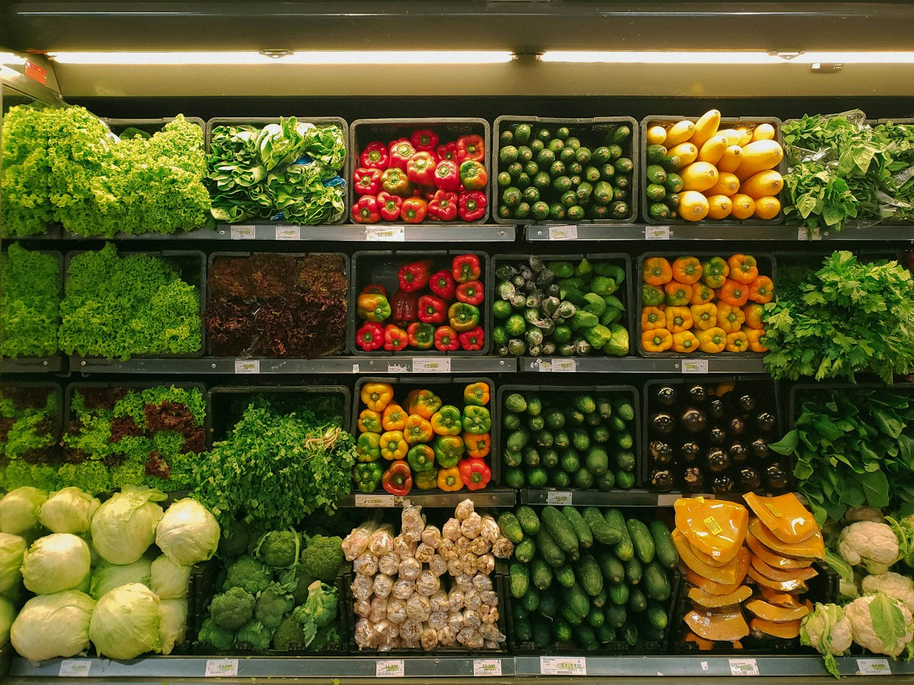
Renzo David Boneth Naranjo
Análisis y diseño de sistemas · Ingeniería de software
Corporación Universitaria Iberoamericana
Docente de la Actividad 1: Tatiana Cabrera
2 de noviembre de 2026 · Documento de avance para revisión académica.
Estado: implementación visual y evidencias técnicas disponibles. Publicación nativa en Figma y nueva validación con usuarios pendientes.
La Actividad 1 identifica la dependencia de intermediarios, la pérdida de cosechas y la complejidad de las herramientas digitales como barreras para pequeños productores. AgriMarket propone conectar oferta y demanda con precios transparentes, publicaciones sencillas y conversación directa.
52 años. Ciénaga, Magdalena. Cultiva mango, yuca y plátano. Maneja un teléfono Android y WhatsApp. Necesita vender a un precio justo y publicar sin formularios complicados.
34 años. Santa Marta. Administra un restaurante. Busca productos frescos, origen cercano y contacto directo para abastecer su negocio.
El productor de pequeña escala necesita publicar y comercializar su cosecha con facilidad porque la intermediación reduce sus ingresos y las herramientas complejas limitan su acceso al mercado.
| Insight de Actividad 1 | Decisión en este prototipo |
|---|---|
| Brecha digital rural y uso cotidiano de WhatsApp. | Lenguaje directo, controles amplios, formulario por bloques y mensaje prearmado. |
| Dificultad al escoger una categoría desplegable. | Categorías con iconos y botones grandes en catálogo y publicación. |
| El comprador necesita conocer la ubicación. | Municipio en la tarjeta; municipio y vereda en el detalle. |
| Confusión entre kilo, libra, bulto y arroba. | Unidad explícita en precio, stock, cantidad y solicitud. Se especifica el peso de bulto y arroba. |
| Requisito | Pantallas / evidencia | Tratamiento en la fase visual |
|---|---|---|
| RF-01 Registro por rol | Registro / Mi perfil | Formulario con nombre, correo, contraseña y selección de comprador o productor. |
| RF-02 Autenticación | Acceso / Panel | Navegación simulada; no verifica credenciales ni guarda contraseñas. |
| RF-03 Publicar, editar y eliminar | Publicar / Mis productos | CRUD de demostración en el navegador, validación de datos y confirmación al retirar. |
| RF-04 Buscar y filtrar | Catálogo | Filtros combinados por nombre, categoría y municipio; estado sin resultados. |
| RF-05 Solicitud de compra | Detalle / Revisión | Cantidad limitada al stock, unidad visible y subtotal antes de continuar. |
| RF-06 WhatsApp | Mensaje preparado | Enlace con resumen. No hay teléfonos reales: el evaluador elige un contacto de prueba. |
HU1: un productor publica una oferta con foto, precio y cantidad. El prototipo valida el formulario y agrega una tarjeta de demostración. La fotografía elegida se previsualiza temporalmente; la tarjeta usa una imagen de muestra. Persistencia de fotos y base de datos pertenecen a la implementación posterior.
HU2: un comprador selecciona “Tubérculos” y ve únicamente los productos de esa categoría. Se puede combinar con municipio y palabra clave.
La propuesta no incorpora pasarela de pagos, rastreo GPS, subastas ni reseñas avanzadas. El panel muestra publicaciones y borradores preparados; el valor solicitado no se interpreta como ingresos ni ventas confirmadas.
Se implementan distribución responsiva, módulos separados y recursos locales. El objetivo de carga inferior a 2,5 segundos en 3G/4G requiere una medición de rendimiento posterior. BCrypt, autenticación y HTTPS son requisitos del futuro backend, no garantías de esta maqueta.
El verde campo organiza la navegación; brote identifica acciones destacadas y estados seleccionados; terracota aporta un acento cálido. Los fondos claros, bordes discretos y tarjetas consistentes facilitan comparar cosechas.
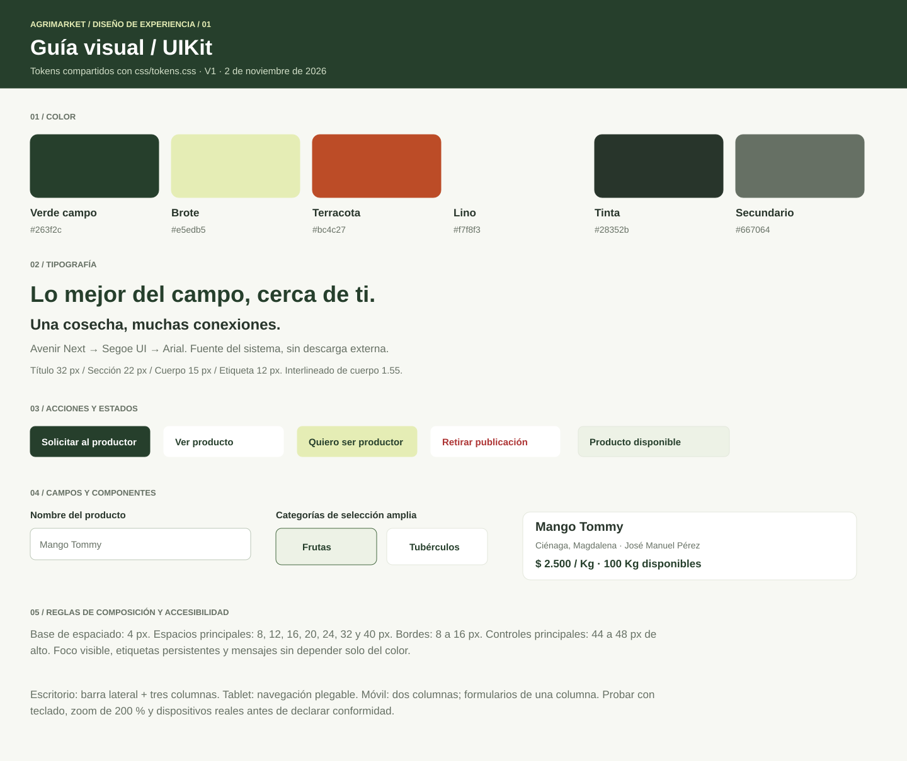
El comprador entra al catálogo público. El productor accede a su panel y a la gestión de cosechas. Ambos disponen de perfil, ayuda y acceso a la guía del proyecto. En móvil la navegación se pliega en un menú.
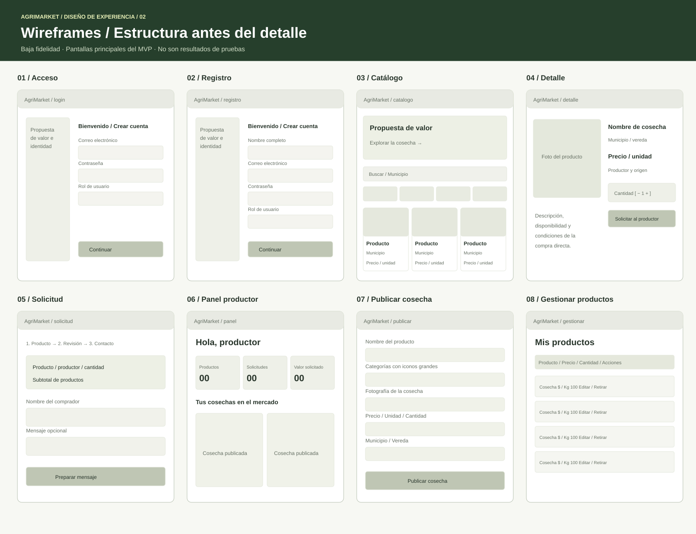
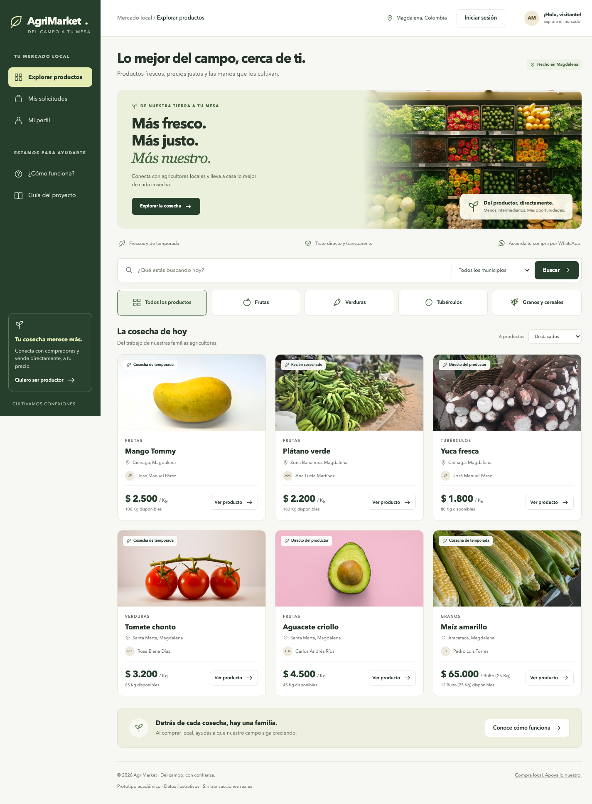
La tarjeta prioriza producto, origen, productor y precio. El detalle permite elegir cantidad antes de preparar la solicitud. La navegación del comprador sigue tres etapas principales: producto → revisión → contacto.
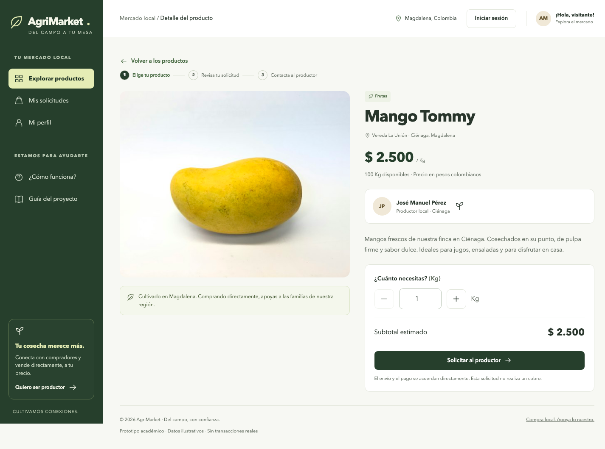
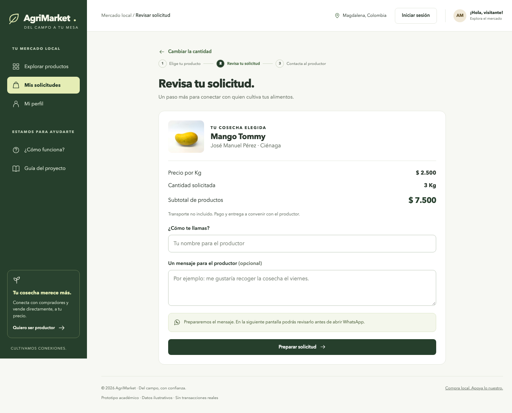
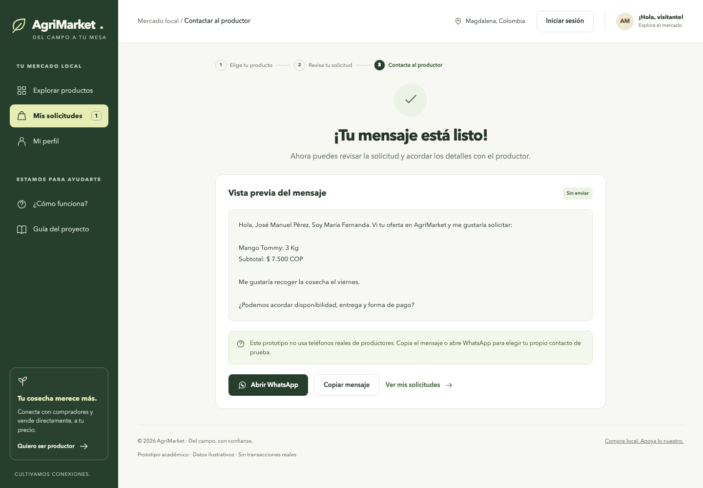
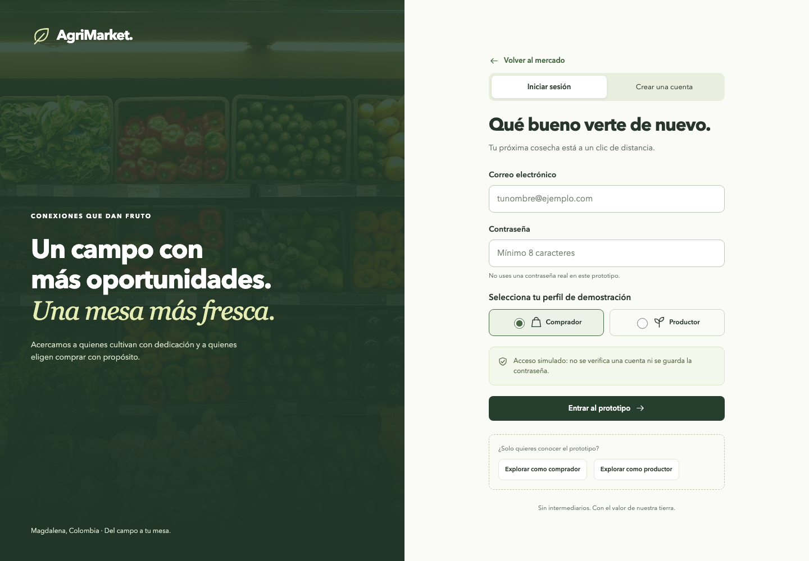
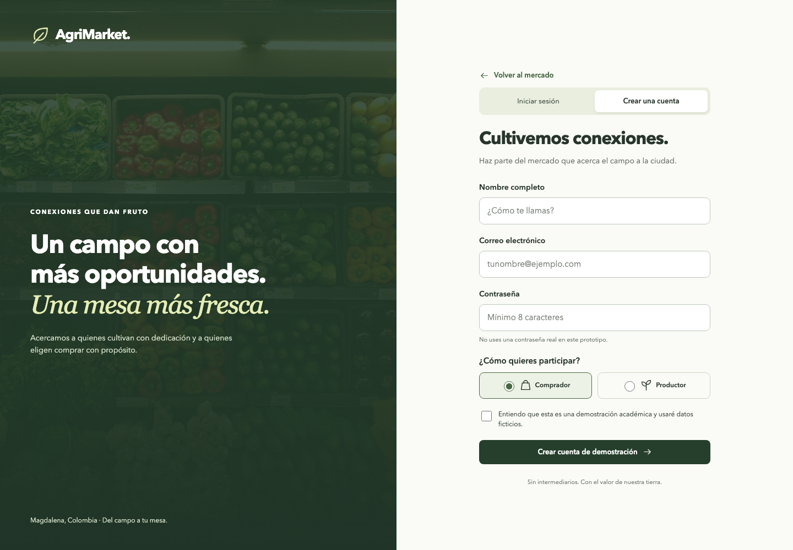
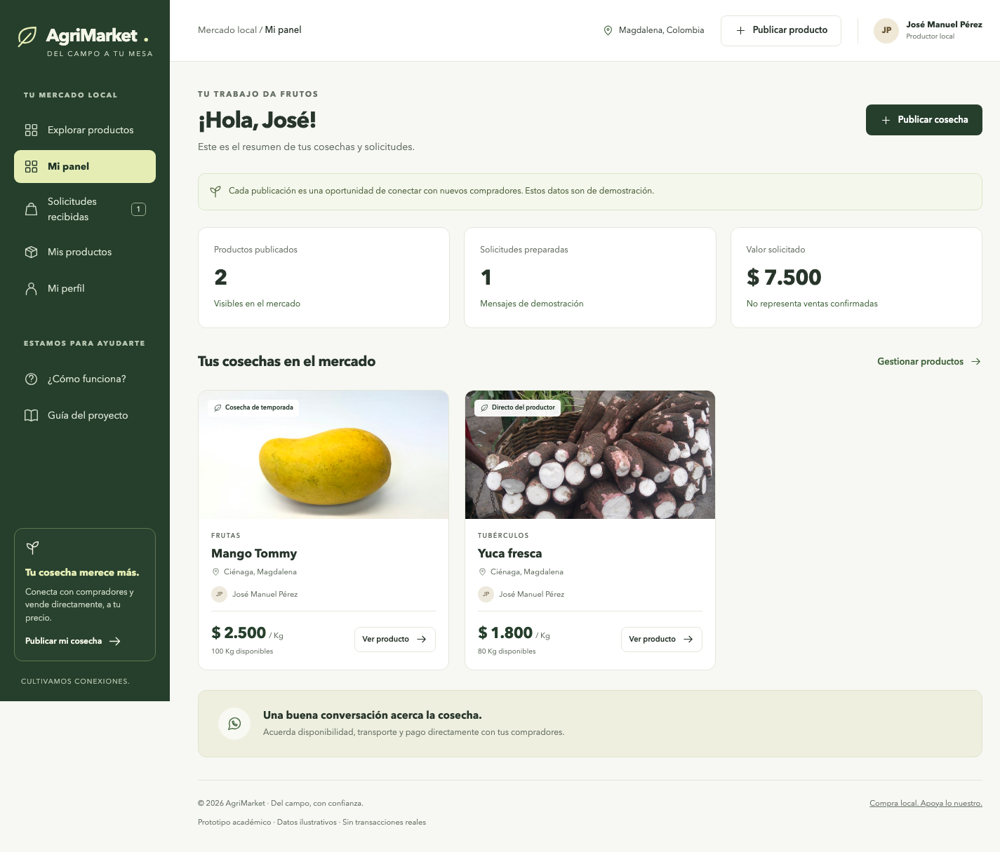
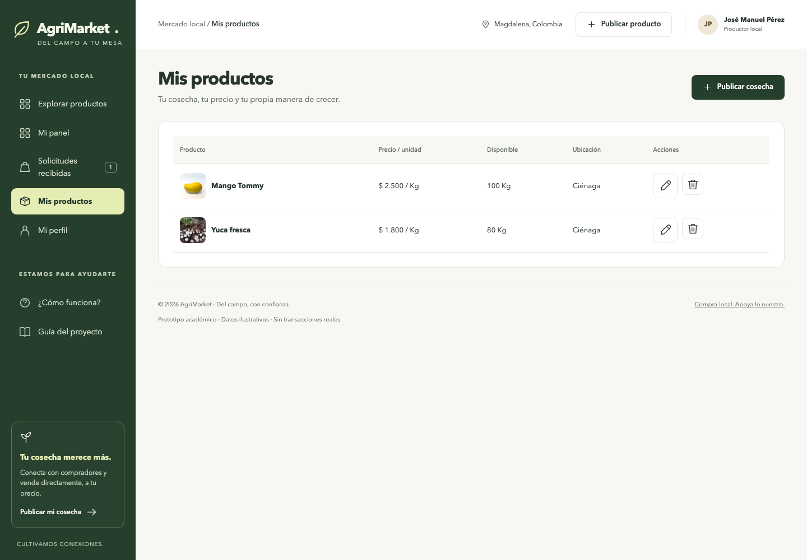
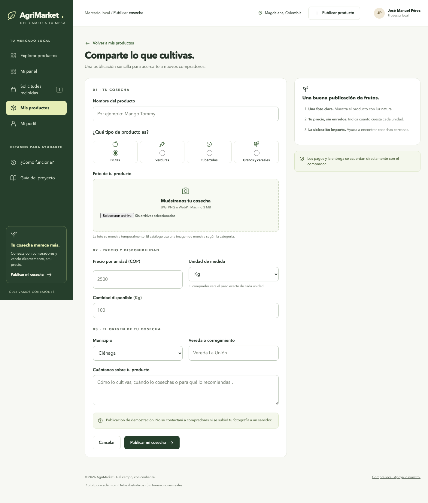
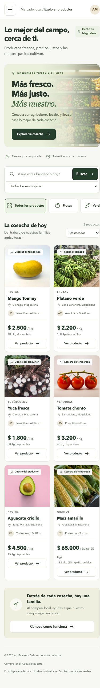
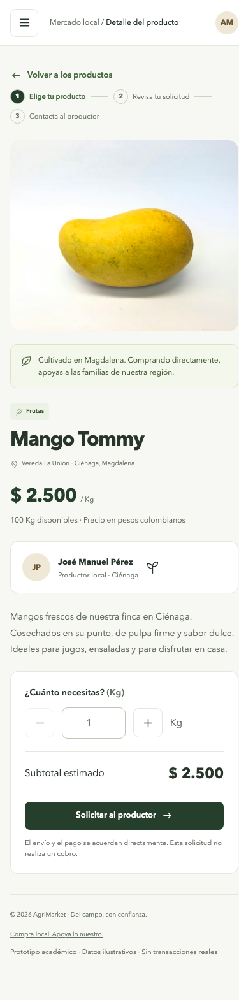
HTML semántico, enlace para saltar al contenido, etiquetas de formulario, estados aria-pressed en categorías, aria-expanded en menú, mensajes con aria-live, foco visible y respeto a la preferencia de movimiento reducido. El menú se cierra con Escape.
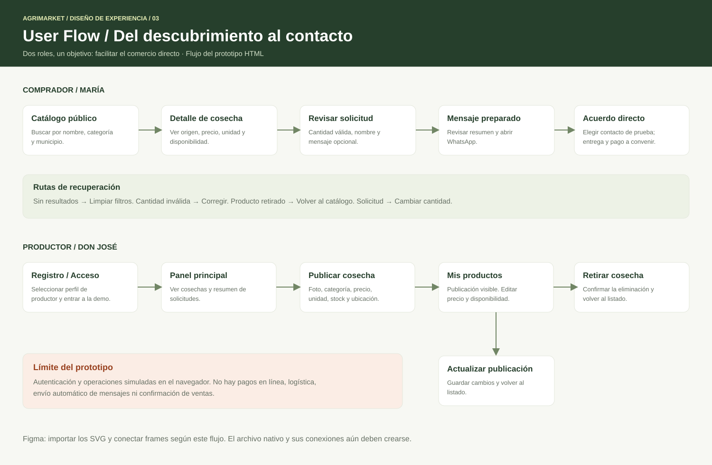
Los resultados vacíos permiten limpiar filtros. Una cantidad superior al stock impide continuar. Las rutas de producto inexistente permiten regresar al catálogo. Retirar una publicación exige confirmar y conservar permite cancelar.
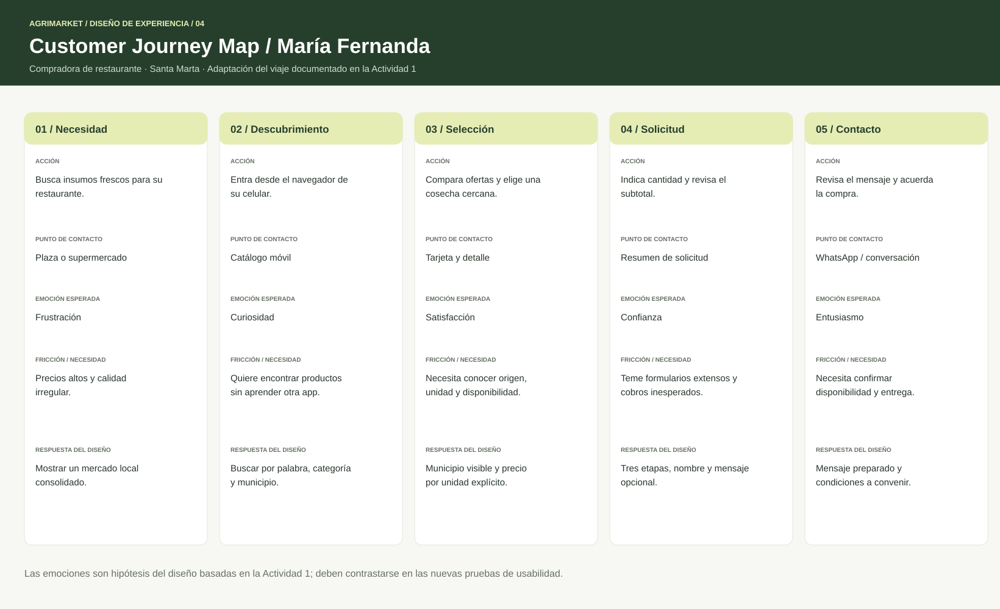
La transparencia acompaña cada etapa: se ve el municipio antes de abrir el producto, la unidad junto al precio, el subtotal antes de preparar el mensaje y la condición “sin enviar” antes de salir hacia WhatsApp.
La página 16 del documento previo reporta tres participantes. Se conservan como antecedentes, sin atribuirlos a pruebas realizadas durante esta fase.
| Participante previo | Hallazgo documentado | Respuesta en esta versión |
|---|---|---|
| Don José / productor | Confusión con categoría desplegable. | Opciones amplias con iconos y rótulos. |
| María / compradora | Realizó la tarea en 45 segundos; pidió ver la ubicación. | Municipio visible en la tarjeta y vereda en el detalle. |
| Carlos / comprador | Dificultad para distinguir unidades de venta. | Unidad explícita y peso de bulto y arroba. |
Se ejecutaron recorridos automatizados en Brave/Chromium local: filtro por categoría, ausencia de resultados, cálculo de subtotal, rechazo de cantidad superior al stock, mensaje preparado, acceso demo y creación, edición y retiro de publicaciones. Se revisó la ausencia de desbordamiento horizontal e imágenes rotas en las pantallas a 1440, 768, 390 y 320 px. El registro detallado está en docs/evidencias/qa.json.
Durante esta revisión se ajustó el ancho mínimo de los formularios de acceso para 320 px y se limitó el botón del menú a la navegación móvil. Son correcciones técnicas, no hallazgos de personas evaluadoras.
Participantes previstos: al menos un pequeño productor con manejo básico de smartphone y dos compradores locales, de preferencia una persona que compre para un restaurante. Se deben registrar los perfiles reales, su consentimiento y el dispositivo utilizado. Duración estimada: 15–20 minutos por sesión.
| Tarea sin indicar botones | Resultado esperado | Medición |
|---|---|---|
| T1. Busca yuca producida en Ciénaga. | Encuentra la oferta combinando filtros. | Tiempo, errores, ayuda y éxito. |
| T2. Solicita 3 Kg de mango y explica cómo pagarías. | Revisa subtotal de $7.500 y comprende que el pago se acuerda con el productor. | Comprensión, retrocesos y errores de unidad. |
| T3. Como productor, publica 100 Kg de mango a $2.500/Kg. | Completa datos, elige categoría y foto y encuentra la publicación. | Tiempo, campos confusos y ayudas. |
| T4. Cambia el precio y retira la publicación. | Ubica la gestión, edita y comprende la confirmación. | Éxito y acciones accidentales. |
Usar datos y fotos ficticios. Pedir que la persona piense en voz alta, sin dirigirla. No enviar mensajes a productores reales durante la sesión. Pregunta final: “¿Qué fue lo más difícil?” y facilidad percibida de 1 a 7.
| Participante / perfil | Tarea / tiempo | Éxito / ayuda | Observación literal | Severidad / mejora |
|---|---|---|---|---|
| P01 / Por reclutar | Pendiente | Pendiente | Pendiente de sesión | Por determinar |
| P02 / Por reclutar | Pendiente | Pendiente | Pendiente de sesión | Por determinar |
| P03 / Por reclutar | Pendiente | Pendiente | Pendiente de sesión | Por determinar |
Priorizar cualquier error que impida terminar una tarea o que haga confundir una solicitud con un pago. Con tres participantes, reportar éxitos como conteos, además de tiempos individuales. Como meta exploratoria: completar al menos dos de tres intentos sin ayuda y comprender unidad, origen y forma de acuerdo. No generalizar estadísticamente.
Ciclo: observar → registrar hallazgo → priorizar en backlog → ajustar HTML y diseño → repetir la tarea con el mismo perfil. Una mejora solo se marcará validada después de observar su resultado.
| Ubicación | Responsabilidad |
|---|---|
| index.html | Documento base, metadatos y carga de estilos y aplicación. |
| css/tokens.css, base.css, layout.css | Identidad visual, reglas generales y distribución responsiva. |
| css/components.css, pages.css | Componentes compartidos y estilos específicos de pantallas. |
| js/views/ | Pantallas agrupadas por catálogo, acceso, producto, productor y auxiliares. |
| js/ui.js, icons.js, data.js, store.js | Componentes, iconografía, datos de ejemplo y estado local. |
| docs/figma/ y docs/evidencias/ | Recursos SVG, capturas reales y resultados de revisión técnica. |
Desde la raíz, ejecutar npm start o python3 -m http.server 5500 --bind 127.0.0.1 y abrir http://localhost:5500. No se necesita instalar dependencias. En “Iniciar sesión” se pueden activar perfiles de demostración. En “Guía del proyecto” se pueden abrir los recursos y restablecer los datos.
Las pantallas SVG se exportan del mismo HTML que aparece en las capturas, con formas, textos e imágenes integradas. Se entregan como recursos de intercambio, no como un archivo .fig nativo. Pueden importarse en un archivo de Figma, organizarse en frames y conectarse siguiendo el User Flow. Tipografías, componentes reutilizables y conexiones deben revisarse en Figma.
Se incluye una herramienta local opcional para construir frames y conexiones en un archivo Figma desde esos recursos. Su ejecución en Figma no pudo verificarse en esta sesión; las instrucciones y límites figuran en docs/figma/LEEME.md.
Documento principal: Boneth Naranjo, R. D. (2026). Actividad 1 - Identificar el proyecto tecnológico a trabajar. Material aportado por el estudiante. Diseño, SVG e iconos del presente prototipo: elaboración para AgriMarket. Fotografías ilustrativas; no corresponden a los productores ficticios.
Mercado, mango, tomate, aguacate y maíz: Unsplash (identificadores y enlaces en assets/CREDITOS.md). Yuca: Thamizhpparithi Maari, “Cassava.jpg”, Wikimedia Commons, CC BY-SA 3.0. Plátano: Uprising Man, “Plantain displayed at the Adabraka market in Ghana.jpg”, Wikimedia Commons, CC BY-SA 4.0. Imágenes reducidas y recortadas visualmente. Referencias y licencias completas en assets/CREDITOS.md.